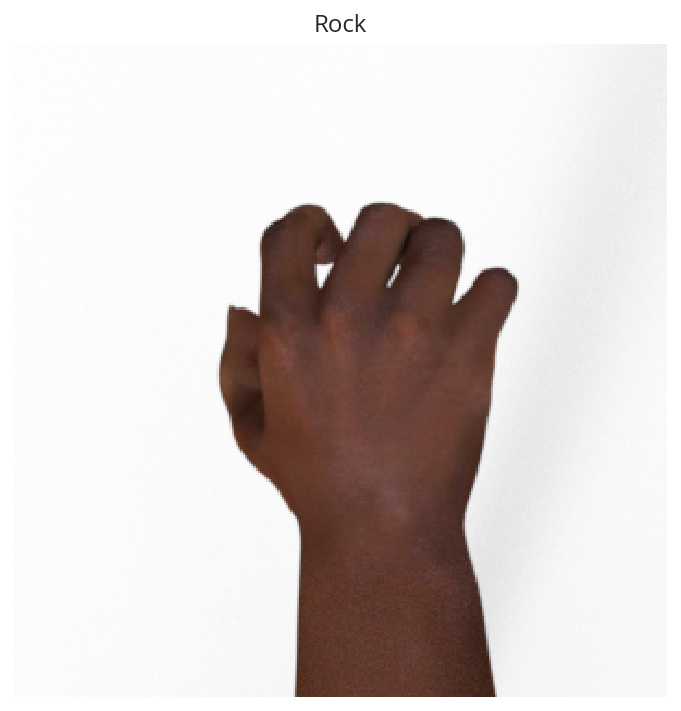
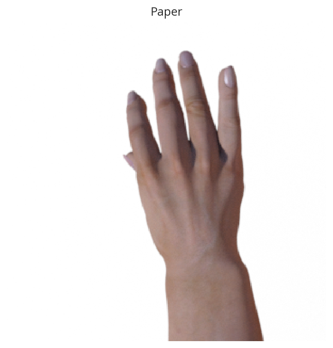
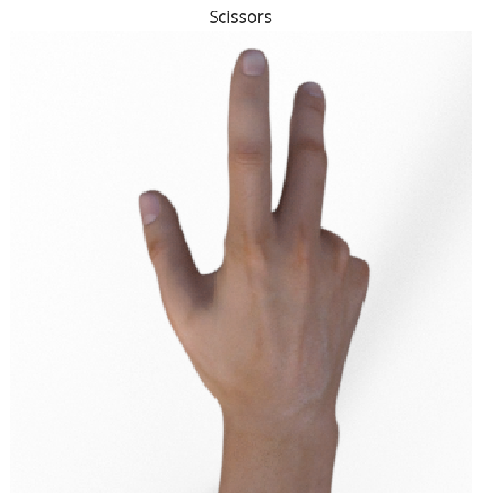

Rock-Paper-Scissors
Table of Contents
Beginning
Imports
Python
from functools import partial
from pathlib import Path
import hvplot.pandas
import numpy
import pandas
import random
PyPi
from tensorflow.keras.models import load_model
from tensorflow.keras.preprocessing.image import ImageDataGenerator
from tensorflow.keras.preprocessing import image as keras_image
import holoviews
import matplotlib.pyplot as pyplot
import matplotlib.image as matplotlib_image
import seaborn
import tensorflow
graeae
from graeae import EmbedHoloviews, SubPathLoader, Timer, ZipDownloader
Set Up
Plotting
get_ipython().run_line_magic('matplotlib', 'inline')
get_ipython().run_line_magic('config', "InlineBackend.figure_format = 'retina'")
seaborn.set(style="whitegrid",
rc={"axes.grid": False,
"font.family": ["sans-serif"],
"font.sans-serif": ["Open Sans", "Latin Modern Sans", "Lato"],
"figure.figsize": (8, 6)},
font_scale=1)
FIGURE_SIZE = (12, 10)
Embed = partial(EmbedHoloviews,
folder_path="../../files/posts/keras/rock-paper-scissors/")
holoviews.extension("bokeh")
The Timer
TIMER = Timer()
The Environment
ENVIRONMENT = SubPathLoader("DATASETS")
Middle
The Data
Downloading it
TRAINING_URL = "https://storage.googleapis.com/laurencemoroney-blog.appspot.com/rps.zip"
TEST_URL = "https://storage.googleapis.com/laurencemoroney-blog.appspot.com/rps-test-set.zip"
OUT_PATH = Path(ENVIRONMENT["ROCK_PAPER_SCISSORS"]).expanduser()
download_train = ZipDownloader(TRAINING_URL, OUT_PATH/"train")
download_test = ZipDownloader(TEST_URL, OUT_PATH/"test")
download_train()
download_test()
I0825 15:06:11.577721 139626236733248 environment.py:35] Environment Path: /home/athena/.env I0825 15:06:11.578975 139626236733248 environment.py:90] Environment Path: /home/athena/.config/datasets/env Files exist, not downloading Files exist, not downloading
The data structure for the folders is fairly deep, so I'll make some shortcuts.
TRAINING = OUT_PATH/"train/rps"
rocks = TRAINING/"rock"
papers = TRAINING/"paper"
scissors = TRAINING/"scissors"
assert papers.is_dir()
assert rocks.is_dir()
assert scissors.is_dir()
rock_images = list(rocks.iterdir())
paper_images = list(papers.iterdir())
scissors_images = list(scissors.iterdir())
print(f"Rocks: {len(rock_images):,}")
print(f"Papers: {len(paper_images):,}")
print(f"Scissors: {len(scissors_images):,}")
Rocks: 840 Papers: 840 Scissors: 840
Some Examples
count=1
rock_sample = random.choice(rock_images[:count])
image = matplotlib_image.imread(str(rock_sample))
pyplot.title("Rock")
pyplot.imshow(image)
pyplot.axis('Off')
pyplot.show()

paper_sample = random.choice(paper_images)
image = matplotlib_image.imread(str(paper_sample))
pyplot.title("Paper")
pyplot.imshow(image)
pyplot.axis('Off')
pyplot.show()

scissors_sample = random.choice(scissors_images)
image = matplotlib_image.imread(str(scissors_sample))
pyplot.title("Scissors")
pyplot.imshow(image)
pyplot.axis('Off')
pyplot.show()

Data Generators
Note: I was originally using keras_preprocessing.image.ImageDataGenerator and getting
AttributeError: 'DirectoryIterator' object has no attribute 'shape'
Make sure to use tensorflow.keras.preprocessing.image.ImageDataGenerator instead.
VALIDATION = OUT_PATH/"test/rps-test-set"
training_data_generator = ImageDataGenerator(
rescale = 1./255,
rotation_range=40,
width_shift_range=0.2,
height_shift_range=0.2,
shear_range=0.2,
zoom_range=0.2,
horizontal_flip=True,
fill_mode='nearest')
validation_data_generator = ImageDataGenerator(rescale = 1./255)
train_generator = training_data_generator.flow_from_directory(
TRAINING,
target_size=(150,150),
class_mode='categorical'
)
validation_generator = validation_data_generator.flow_from_directory(
VALIDATION,
target_size=(150,150),
class_mode='categorical'
)
Found 2520 images belonging to 3 classes. Found 372 images belonging to 3 classes.
A Four-CNN Model
Definition
This is a hand-crafted, relatively shallow Convolutional Neural Network. The input shape matches our target_size arguments for the data-generators. There are four convolutional layers with a filter size of 3 x 3 each follewd by a max-pooling layer. The first two layers have 64 nodes while the two following those have 128 nodes. The convolution layers are followed by a layer to flatten the input and add dropout before reaching our fully connected and output layer which uses softmax to predict the most likely category. Since we have three categories (rock, paper, or scissors) the final layer has three nodes.
model = tensorflow.keras.models.Sequential([
# Input Layer/convolution
tensorflow.keras.layers.Conv2D(64, (3,3), activation='relu', input_shape=(150, 150, 3)),
tensorflow.keras.layers.MaxPooling2D(2, 2),
# The second convolution
tensorflow.keras.layers.Conv2D(64, (3,3), activation='relu'),
tensorflow.keras.layers.MaxPooling2D(2,2),
# The third convolution
tensorflow.keras.layers.Conv2D(128, (3,3), activation='relu'),
tensorflow.keras.layers.MaxPooling2D(2,2),
# The fourth convolution
tensorflow.keras.layers.Conv2D(128, (3,3), activation='relu'),
tensorflow.keras.layers.MaxPooling2D(2,2),
# Flatten
tensorflow.keras.layers.Flatten(),
tensorflow.keras.layers.Dropout(0.5),
# Fully-connected and output layers
tensorflow.keras.layers.Dense(512, activation='relu'),
tensorflow.keras.layers.Dense(3, activation='softmax')
])
Here's a summary of the layers.
model.summary()
Model: "sequential_4" _________________________________________________________________ Layer (type) Output Shape Param # ================================================================= conv2d_16 (Conv2D) (None, 148, 148, 64) 1792 _________________________________________________________________ max_pooling2d_16 (MaxPooling (None, 74, 74, 64) 0 _________________________________________________________________ conv2d_17 (Conv2D) (None, 72, 72, 64) 36928 _________________________________________________________________ max_pooling2d_17 (MaxPooling (None, 36, 36, 64) 0 _________________________________________________________________ conv2d_18 (Conv2D) (None, 34, 34, 128) 73856 _________________________________________________________________ max_pooling2d_18 (MaxPooling (None, 17, 17, 128) 0 _________________________________________________________________ conv2d_19 (Conv2D) (None, 15, 15, 128) 147584 _________________________________________________________________ max_pooling2d_19 (MaxPooling (None, 7, 7, 128) 0 _________________________________________________________________ flatten_4 (Flatten) (None, 6272) 0 _________________________________________________________________ dropout_4 (Dropout) (None, 6272) 0 _________________________________________________________________ dense_8 (Dense) (None, 512) 3211776 _________________________________________________________________ dense_9 (Dense) (None, 3) 1539 ================================================================= Total params: 3,473,475 Trainable params: 3,473,475 Non-trainable params: 0 _________________________________________________________________
You can see that the convolutional layers lose two pixels on output, so the filters are stopping when their edges match the image (so the 3 x 3 filter stops with the center one pixel away from the edge of the image). Additionally, our max-pooling layers are cutting the size of the convolutional layers' output in half, so as we progress through the network the inputs are getting smaller and smaller before reaching the fully-connected layers.
Compile and Fit
Now we need to compile and train the model.
Note: The metrics can change with your settings - make sure the monitor= parameter is pointing to a key in the history. If you see this in the output:
Can save best model only with val_acc available, skipping.
You might have the wrong name for your metric (it isn't val_acc).
model.compile(loss = 'categorical_crossentropy', optimizer='rmsprop', metrics=['accuracy'])
MODELS = Path("~/models/rock-paper-scissors/").expanduser()
best_model = MODELS/"four-layer-cnn.hdf5"
checkpoint = tensorflow.keras.callbacks.ModelCheckpoint(
str(best_model), monitor="val_accuracy", verbose=1,
save_best_only=True)
with TIMER:
model.fit_generator(generator=train_generator,
epochs=25,
callbacks=[checkpoint],
validation_data = validation_generator,
verbose=2)
2019-08-25 15:06:17,145 graeae.timers.timer start: Started: 2019-08-25 15:06:17.145536 I0825 15:06:17.145575 139626236733248 timer.py:70] Started: 2019-08-25 15:06:17.145536 Epoch 1/25 Epoch 00001: val_accuracy improved from -inf to 0.61559, saving model to /home/athena/models/rock-paper-scissors/four-layer-cnn.hdf5 79/79 - 15s - loss: 1.1174 - accuracy: 0.3996 - val_loss: 0.8997 - val_accuracy: 0.6156 Epoch 2/25 Epoch 00002: val_accuracy improved from 0.61559 to 0.93817, saving model to /home/athena/models/rock-paper-scissors/four-layer-cnn.hdf5 79/79 - 14s - loss: 0.8115 - accuracy: 0.6381 - val_loss: 0.2403 - val_accuracy: 0.9382 Epoch 3/25 Epoch 00003: val_accuracy improved from 0.93817 to 0.97043, saving model to /home/athena/models/rock-paper-scissors/four-layer-cnn.hdf5 79/79 - 14s - loss: 0.5604 - accuracy: 0.7750 - val_loss: 0.2333 - val_accuracy: 0.9704 Epoch 4/25 Epoch 00004: val_accuracy improved from 0.97043 to 0.98387, saving model to /home/athena/models/rock-paper-scissors/four-layer-cnn.hdf5 79/79 - 14s - loss: 0.3926 - accuracy: 0.8496 - val_loss: 0.0681 - val_accuracy: 0.9839 Epoch 5/25 Epoch 00005: val_accuracy improved from 0.98387 to 0.99194, saving model to /home/athena/models/rock-paper-scissors/four-layer-cnn.hdf5 79/79 - 14s - loss: 0.2746 - accuracy: 0.8925 - val_loss: 0.0395 - val_accuracy: 0.9919 Epoch 6/25 Epoch 00006: val_accuracy did not improve from 0.99194 79/79 - 14s - loss: 0.2018 - accuracy: 0.9246 - val_loss: 0.1427 - val_accuracy: 0.9328 Epoch 7/25 Epoch 00007: val_accuracy did not improve from 0.99194 79/79 - 14s - loss: 0.2052 - accuracy: 0.9238 - val_loss: 0.4212 - val_accuracy: 0.8253 Epoch 8/25 Epoch 00008: val_accuracy did not improve from 0.99194 79/79 - 14s - loss: 0.1649 - accuracy: 0.9460 - val_loss: 0.1079 - val_accuracy: 0.9597 Epoch 9/25 Epoch 00009: val_accuracy did not improve from 0.99194 79/79 - 14s - loss: 0.1678 - accuracy: 0.9452 - val_loss: 0.0782 - val_accuracy: 0.9597 Epoch 10/25 Epoch 00010: val_accuracy did not improve from 0.99194 79/79 - 14s - loss: 0.1388 - accuracy: 0.9508 - val_loss: 0.0425 - val_accuracy: 0.9731 Epoch 11/25 Epoch 00011: val_accuracy did not improve from 0.99194 79/79 - 14s - loss: 0.1207 - accuracy: 0.9611 - val_loss: 0.0758 - val_accuracy: 0.9570 Epoch 12/25 Epoch 00012: val_accuracy did not improve from 0.99194 79/79 - 14s - loss: 0.1195 - accuracy: 0.9639 - val_loss: 0.1392 - val_accuracy: 0.9489 Epoch 13/25 Epoch 00013: val_accuracy improved from 0.99194 to 1.00000, saving model to /home/athena/models/rock-paper-scissors/four-layer-cnn.hdf5 79/79 - 14s - loss: 0.1182 - accuracy: 0.9583 - val_loss: 0.0147 - val_accuracy: 1.0000 Epoch 14/25 Epoch 00014: val_accuracy did not improve from 1.00000 79/79 - 14s - loss: 0.0959 - accuracy: 0.9722 - val_loss: 0.1264 - val_accuracy: 0.9543 Epoch 15/25 Epoch 00015: val_accuracy did not improve from 1.00000 79/79 - 14s - loss: 0.1225 - accuracy: 0.9643 - val_loss: 0.1124 - val_accuracy: 0.9677 Epoch 16/25 Epoch 00016: val_accuracy did not improve from 1.00000 79/79 - 14s - loss: 0.0959 - accuracy: 0.9706 - val_loss: 0.0773 - val_accuracy: 0.9677 Epoch 17/25 Epoch 00017: val_accuracy did not improve from 1.00000 79/79 - 14s - loss: 0.0817 - accuracy: 0.9687 - val_loss: 0.0120 - val_accuracy: 1.0000 Epoch 18/25 Epoch 00018: val_accuracy did not improve from 1.00000 79/79 - 14s - loss: 0.1308 - accuracy: 0.9627 - val_loss: 0.1058 - val_accuracy: 0.9758 Epoch 19/25 Epoch 00019: val_accuracy did not improve from 1.00000 79/79 - 14s - loss: 0.0967 - accuracy: 0.9675 - val_loss: 0.0356 - val_accuracy: 0.9866 Epoch 20/25 Epoch 00020: val_accuracy did not improve from 1.00000 79/79 - 14s - loss: 0.0785 - accuracy: 0.9726 - val_loss: 0.0474 - val_accuracy: 0.9704 Epoch 21/25 Epoch 00021: val_accuracy did not improve from 1.00000 79/79 - 14s - loss: 0.0962 - accuracy: 0.9710 - val_loss: 0.0774 - val_accuracy: 0.9677 Epoch 22/25 Epoch 00022: val_accuracy did not improve from 1.00000 79/79 - 14s - loss: 0.0802 - accuracy: 0.9754 - val_loss: 0.1592 - val_accuracy: 0.9516 Epoch 23/25 Epoch 00023: val_accuracy did not improve from 1.00000 79/79 - 14s - loss: 0.0909 - accuracy: 0.9714 - val_loss: 0.1123 - val_accuracy: 0.9382 Epoch 24/25 Epoch 00024: val_accuracy did not improve from 1.00000 79/79 - 14s - loss: 0.0573 - accuracy: 0.9782 - val_loss: 0.0609 - val_accuracy: 0.9785 Epoch 25/25 Epoch 00025: val_accuracy did not improve from 1.00000 79/79 - 14s - loss: 0.0860 - accuracy: 0.9778 - val_loss: 0.1106 - val_accuracy: 0.9677 2019-08-25 15:12:11,360 graeae.timers.timer end: Ended: 2019-08-25 15:12:11.360361 I0825 15:12:11.360388 139626236733248 timer.py:77] Ended: 2019-08-25 15:12:11.360361 2019-08-25 15:12:11,361 graeae.timers.timer end: Elapsed: 0:05:54.214825 I0825 15:12:11.361701 139626236733248 timer.py:78] Elapsed: 0:05:54.214825
That did surprisingly well… is it really that easy a problem?
predictor = load_model(best_model)
data = pandas.DataFrame(model.history.history)
plot = data.hvplot().opts(title="Rock, Paper, Scissors Training and Validation", width=1000, height=800)
Embed(plot=plot, file_name="training")()
Looking at the validation accuracy it appears that it starts to overfit at the end. Strangely, the validation loss, up until the overfitting, is lower than the training loss, and the validation accuracy is better almost throughout - perhaps this is because the image augmentation for the training set is too hard.
End
Some Test Images
base = Path("~/test_images").expanduser()
paper = base/"Rock-paper-scissors_(paper).png"
image_ = matplotlib_image.imread(str(paper))
pyplot.title("Paper Test Case")
pyplot.imshow(image)
pyplot.axis('Off')
pyplot.show()
classifications = dict(zip(range(3), ("Paper", "Rock", "Scissors")))
image_ = keras_image.load_img(str(paper), target_size=(150, 150))
x = keras_image.img_to_array(image_)
x = numpy.expand_dims(x, axis=0)
images = numpy.vstack([x])
classes = predictor.predict(images, batch_size=10)
print(classifications[classes.argmax()])
Paper
base = Path("~/test_images").expanduser()
rock = base/"Rock-paper-scissors_(rock).png"
image = matplotlib_image.imread(str(rock))
pyplot.title("Rock Test Case")
pyplot.imshow(image)
pyplot.axis('Off')
pyplot.show()
base = Path("~/test_images").expanduser()
rock = base/"Rock-paper-scissors_(rock).png"
image_ = keras_image.load_img(str(rock), target_size=(150, 150))
x = keras_image.img_to_array(image_)
x = numpy.expand_dims(x, axis=0)
images = numpy.vstack([x])
classes = predictor.predict(images, batch_size=10)
print(classifications[classes.argmax()])
Rock
base = Path("~/test_images").expanduser()
scissors = base/"Rock-paper-scissors_(scissors).png"
image = matplotlib_image.imread(str(scissors))
pyplot.title("Scissors Test Case")
pyplot.imshow(image)
pyplot.axis('Off')
pyplot.show()
image_ = keras_image.load_img(str(scissors), target_size=(150, 150))
x = keras_image.img_to_array(image_)
x = numpy.expand_dims(x, axis=0)
images = numpy.vstack([x])
classes = predictor.predict(images, batch_size=10)
print(classifications[classes.argmax()])
Paper
What If we re-train the model, will it get better?
with TIMER:
model.fit_generator(generator=train_generator,
epochs=25,
callbacks=[checkpoint],
validation_data = validation_generator,
verbose=2)
2019-08-25 15:21:37,706 graeae.timers.timer start: Started: 2019-08-25 15:21:37.706175 I0825 15:21:37.706199 139626236733248 timer.py:70] Started: 2019-08-25 15:21:37.706175 Epoch 1/25 Epoch 00001: val_accuracy did not improve from 1.00000 79/79 - 15s - loss: 0.0792 - accuracy: 0.9798 - val_loss: 0.1101 - val_accuracy: 0.9543 Epoch 2/25 Epoch 00002: val_accuracy did not improve from 1.00000 79/79 - 14s - loss: 0.0691 - accuracy: 0.9798 - val_loss: 0.1004 - val_accuracy: 0.9570 Epoch 3/25 Epoch 00003: val_accuracy did not improve from 1.00000 79/79 - 14s - loss: 0.0850 - accuracy: 0.9762 - val_loss: 0.0098 - val_accuracy: 1.0000 Epoch 4/25 Epoch 00004: val_accuracy did not improve from 1.00000 79/79 - 14s - loss: 0.0799 - accuracy: 0.9730 - val_loss: 0.1022 - val_accuracy: 0.9409 Epoch 5/25 Epoch 00005: val_accuracy did not improve from 1.00000 79/79 - 14s - loss: 0.0767 - accuracy: 0.9758 - val_loss: 0.1134 - val_accuracy: 0.9328 Epoch 6/25 Epoch 00006: val_accuracy did not improve from 1.00000 79/79 - 14s - loss: 0.0747 - accuracy: 0.9833 - val_loss: 0.0815 - val_accuracy: 0.9731 Epoch 7/25 Epoch 00007: val_accuracy did not improve from 1.00000 79/79 - 14s - loss: 0.0680 - accuracy: 0.9817 - val_loss: 0.1476 - val_accuracy: 0.9059 Epoch 8/25 Epoch 00008: val_accuracy did not improve from 1.00000 79/79 - 14s - loss: 0.0669 - accuracy: 0.9821 - val_loss: 0.0202 - val_accuracy: 0.9866 Epoch 9/25 Epoch 00009: val_accuracy did not improve from 1.00000 79/79 - 14s - loss: 0.0809 - accuracy: 0.9774 - val_loss: 0.3860 - val_accuracy: 0.8844 Epoch 10/25 Epoch 00010: val_accuracy did not improve from 1.00000 79/79 - 14s - loss: 0.0583 - accuracy: 0.9817 - val_loss: 0.0504 - val_accuracy: 0.9812 Epoch 11/25 Epoch 00011: val_accuracy did not improve from 1.00000 79/79 - 14s - loss: 0.0691 - accuracy: 0.9806 - val_loss: 0.0979 - val_accuracy: 0.9624 Epoch 12/25 Epoch 00012: val_accuracy did not improve from 1.00000 79/79 - 14s - loss: 0.0459 - accuracy: 0.9881 - val_loss: 0.1776 - val_accuracy: 0.9167 Epoch 13/25 Epoch 00013: val_accuracy did not improve from 1.00000 79/79 - 14s - loss: 0.0648 - accuracy: 0.9821 - val_loss: 0.0770 - val_accuracy: 0.9435 Epoch 14/25 Epoch 00014: val_accuracy did not improve from 1.00000 79/79 - 14s - loss: 0.0549 - accuracy: 0.9825 - val_loss: 0.0075 - val_accuracy: 1.0000 Epoch 15/25 Epoch 00015: val_accuracy did not improve from 1.00000 79/79 - 14s - loss: 0.0575 - accuracy: 0.9829 - val_loss: 0.1787 - val_accuracy: 0.9167 Epoch 16/25 Epoch 00016: val_accuracy did not improve from 1.00000 79/79 - 14s - loss: 0.0665 - accuracy: 0.9778 - val_loss: 0.0230 - val_accuracy: 0.9866 Epoch 17/25 Epoch 00017: val_accuracy did not improve from 1.00000 79/79 - 14s - loss: 0.0557 - accuracy: 0.9825 - val_loss: 0.0431 - val_accuracy: 0.9785 Epoch 18/25 Epoch 00018: val_accuracy did not improve from 1.00000 79/79 - 14s - loss: 0.0628 - accuracy: 0.9817 - val_loss: 0.2121 - val_accuracy: 0.8952 Epoch 19/25 Epoch 00019: val_accuracy did not improve from 1.00000 79/79 - 14s - loss: 0.0580 - accuracy: 0.9841 - val_loss: 0.0705 - val_accuracy: 0.9651 Epoch 20/25 Epoch 00020: val_accuracy did not improve from 1.00000 79/79 - 14s - loss: 0.0578 - accuracy: 0.9810 - val_loss: 0.3318 - val_accuracy: 0.8925 Epoch 21/25 Epoch 00021: val_accuracy did not improve from 1.00000 79/79 - 14s - loss: 0.0500 - accuracy: 0.9821 - val_loss: 0.2106 - val_accuracy: 0.8925 Epoch 22/25 Epoch 00022: val_accuracy did not improve from 1.00000 79/79 - 14s - loss: 0.0520 - accuracy: 0.9829 - val_loss: 0.1040 - val_accuracy: 0.9382 Epoch 23/25 Epoch 00023: val_accuracy did not improve from 1.00000 79/79 - 14s - loss: 0.0693 - accuracy: 0.9853 - val_loss: 0.6132 - val_accuracy: 0.8575 Epoch 24/25 Epoch 00024: val_accuracy did not improve from 1.00000 79/79 - 14s - loss: 0.0553 - accuracy: 0.9849 - val_loss: 0.3048 - val_accuracy: 0.8817 Epoch 25/25 Epoch 00025: val_accuracy did not improve from 1.00000 79/79 - 14s - loss: 0.0376 - accuracy: 0.9877 - val_loss: 0.0121 - val_accuracy: 1.0000 2019-08-25 15:27:32,278 graeae.timers.timer end: Ended: 2019-08-25 15:27:32.278250 I0825 15:27:32.278276 139626236733248 timer.py:77] Ended: 2019-08-25 15:27:32.278250 2019-08-25 15:27:32,279 graeae.timers.timer end: Elapsed: 0:05:54.572075 I0825 15:27:32.279404 139626236733248 timer.py:78] Elapsed: 0:05:54.572075
So, your validation went up to 100%, is it a super-classifier?
data = pandas.DataFrame(model.history.history)
plot = data.hvplot().opts(title="Rock, Paper, Scissors Re-Training and Re-Validation", width=1000, height=800)
Embed(plot=plot, file_name="re_training")()
predictor = load_model(best_model)
classifications = dict(zip(range(3), ("Paper", "Rock", "Scissors")))
image_ = keras_image.load_img(str(paper), target_size=(150, 150))
x = keras_image.img_to_array(image_)
x = numpy.expand_dims(x, axis=0)
images = numpy.vstack([x])
classes = model.predict(images, batch_size=10)
print(classifications[classes.argmax()])
Rock
classifications = dict(zip(range(3), ("Paper", "Rock", "Scissors")))
image_ = keras_image.load_img(str(rock), target_size=(150, 150))
x = keras_image.img_to_array(image_)
x = numpy.expand_dims(x, axis=0)
images = numpy.vstack([x])
classes = model.predict(images, batch_size=10)
print(classifications[classes.argmax()])
Rock
classifications = dict(zip(range(3), ("Paper", "Rock", "Scissors")))
image_ = keras_image.load_img(str(scissors), target_size=(150, 150))
x = keras_image.img_to_array(image_)
x = numpy.expand_dims(x, axis=0)
images = numpy.vstack([x])
classes = model.predict(images, batch_size=10)
print(classifications[classes.argmax()])
Paper
I don't have a large test set, but just from these three it seems like the model got worse.
Sources
- The Rock-Paper-Scissors dataset was created by Laurence Moroney (lmoroney@gmail.com / laurencemoroney.com).
- The test images came from the Wikipedia article on the Rock-paper-scissors game.